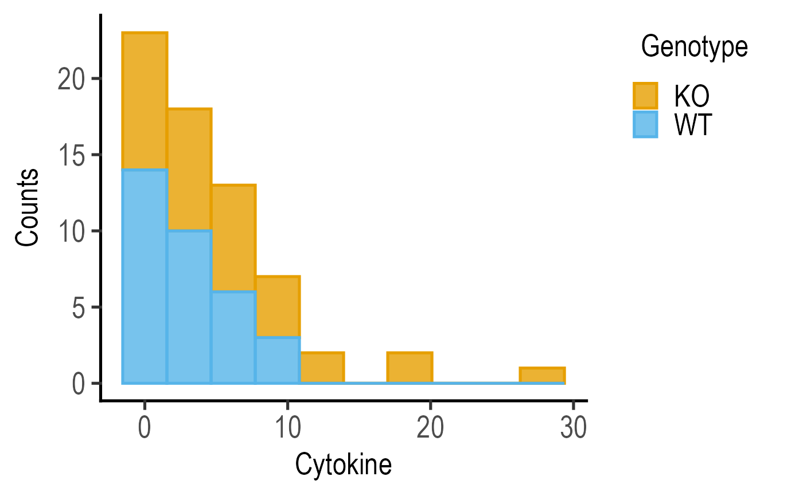

This function takes a data table, a quantitative variable (ycol) and a grouping variable (group), if available, and plots a histogram graph using geom_histogram). Alternatives are plot_density, or plot_qqline.
plot_histogram(
data,
ycol,
group,
facet,
PlotType = c("Counts", "Normalised counts"),
BinSize = 30,
c_alpha = 0.8,
TextXAngle = 0,
facet_scales = "fixed",
fontsize = 20,
linethick,
alpha,
LogYTrans,
LogYBreaks = waiver(),
LogYLabels = waiver(),
LogYLimits = NULL,
ColPal = c("okabe_ito", "all_grafify", "bright", "contrast", "dark", "fishy", "kelly",
"light", "muted", "pale", "r4", "safe", "vibrant"),
ColSeq = TRUE,
ColRev = FALSE,
SingleColour = NULL,
...
)Arguments
- data
a data table e.g. data.frame or tibble.
- ycol
name of the column (without quotes) with the quantitative variable whose histogram distribution is to be plotted.
- group
name of the column containing a categorical grouping variable.
- facet
add another variable (without quotes) from the data table to create faceted graphs using
facet_wrap.- PlotType
the default (
Counts) plot will plot counts in the bins, which can be changed toNormalised counts.- BinSize
number of distinct bins to use on X-axis, default set to 30.
- c_alpha
fractional opacity of colour filled within histograms, default set to 0.8 (i.e. 80% opacity).
- TextXAngle
orientation of text on X-axis; default 0 degrees. Change to 45 or 90 to remove overlapping text.
- facet_scales
whether or not to fix scales on X & Y axes for all facet facet graphs. Can be
fixed(default),free,free_yorfree_x(for Y and X axis one at a time, respectively).- fontsize
parameter of
base_sizeof fonts intheme_classic, default set to size 20.- linethick
thickness of symbol border, default set to
fontsize/22.- alpha
deprecated old argument for
c_alpha; retained for backward compatibility.- LogYTrans
transform Y axis into "log10" or "log2" (in quotes).
- LogYBreaks
argument for
scale_y_continuousfor Y axis breaks on log scales, default iswaiver(), or provide a vector of desired breaks.- LogYLabels
argument for
scale_y_continuousfor Y axis labels on log scales, default iswaiver(), or provide a vector of desired labels.- LogYLimits
a vector of length two specifying the range (minimum and maximum) of the Y axis.
- ColPal
grafify colour palette to apply (in quotes), default "okabe_ito"; see
graf_palettesfor available palettes.- ColSeq
logical TRUE or FALSE. Default TRUE for sequential colours from chosen palette. Set to FALSE for distant colours, which will be applied using
scale_fill_grafify2.- ColRev
whether to reverse order of colour within the selected palette, default F (FALSE); can be set to T (TRUE).
- SingleColour
a colour hexcode (starting with #, e.g., "#E69F00"), a number between 1-154, or names of colours from
grafifypalettes or base R to fill along X-axis aesthetic. Accepts any colour other than "black"; usegrey_lin11, which is almost black.- ...
any additional arguments to pass to
geom_histogram.
Value
This function returns a ggplot2 object of class "gg" and "ggplot".
Details
Note that the function requires the quantitative Y variable first, and groups them based on a categorical variable passed on via the group argument. The grouping variable is mapped to the fill aesthetics in geom_histogram.
ColPal & ColRev options are applied to both fill and colour scales. Colours available can be seen quickly with plot_grafify_palette.
Colours can be changed using ColPal, ColRev or ColSeq arguments.
ColPal can be one of the following: "okabe_ito", "dark", "light", "bright", "pale", "vibrant, "muted" or "contrast".
ColRev (logical TRUE/FALSE) decides whether colours are chosen from first-to-last or last-to-first from within the chosen palette.
ColSeq decides whether colours are picked by respecting the order in the palette or the most distant ones using colorRampPalette.
Examples
#Basic usage
plot_histogram(data = data_t_pratio,
ycol = Cytokine, group = Genotype,
BinSize = 10)

#with log transformation
plot_histogram(data = data_t_pratio,
ycol = log(Cytokine), group = Genotype,
BinSize = 10)
 #Normalised counts
plot_histogram(data = data_t_pratio,
ycol = log(Cytokine), group = Genotype,
PlotType = "Normalised counts",
BinSize = 10)
#Normalised counts
plot_histogram(data = data_t_pratio,
ycol = log(Cytokine), group = Genotype,
PlotType = "Normalised counts",
BinSize = 10)